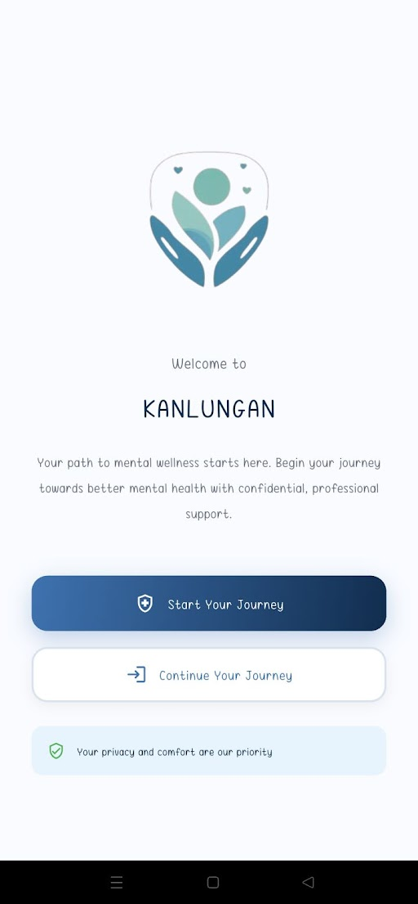

"Kanlungan" is an anonymous, multi-platform teletherapy application designed to provide accessible mental health support. It offers free self-help tools and AI chatbot assistance, while also connecting paid users with licensed mental health professionals for real-time audio/video consultations and group therapy sessions.

Mental health is a growing global concern affecting individuals across all demographics. The stigma surrounding mental illness and the shortage of qualified professionals create significant barriers to care.
In the Philippines, approximately 12.5 million individuals suffer from mental health conditions, yet access to professional support remains limited, especially in remote areas.
Cultural stigma prevents many from seeking help
Severe shortage of mental health professionals
Cost of therapy prevents access for many
Kanlungan provides a complete ecosystem for mental health support with features for users, professionals, and administrators.
Sign up with just a nickname - no personal identification required to get started with basic features.
Initial curated questions to guide you to the most appropriate support options for your needs.
Gemini AI-powered emotional support available anytime with coping tips and resource suggestions.
Daily mantras, calming music library, inspirational audiobooks, and quotes to manage stress and anxiety.
Moderated peer support space to connect with others who understand your journey.
Secure audio/video sessions with licensed mental health professionals tailored to your needs.
Virtual group sessions facilitated by professionals for shared healing experiences.
Monitor your mental health journey with detailed insights and personalized recommendations.
Comprehensive neurophysiological evaluations by qualified mental health professionals.
Emergency button for immediate help access during high-risk situations with direct connection to emergency services.
Credential-based registration ensuring only qualified professionals join the platform.
Comprehensive patient records, session history, and progress tracking in one place.
Create, assign, and evaluate custom assessments for your clients with detailed analytics.
Smart calendar management with automated reminders and appointment confirmations.
Rigorous license and credential validation process for all mental health professionals.
Real-time platform oversight with comprehensive analytics and performance tracking.
Secure payment processing, transaction monitoring, and financial reporting systems.
Community forum supervision and user support systems to maintain a safe environment.
Kanlungan was developed using a modern, secure, and scalable technology stack, prioritizing user privacy and seamless experience across all platforms.
Cross-platform development for consistent user experience on both iOS and Android
Secure cloud database and backend services for real-time data synchronization
All communications and data are encrypted to ensure complete privacy
Advanced AI chatbot providing 24/7 mental health support and resources
Secure payment processing for professional services and transactions
Kanlungan strictly adheres to the Philippine Data Privacy Act of 2012, ensuring:
Built using Agile Scrum methodology with continuous testing and user feedback integration throughout development.
The Kanlungan platform was developed by a dedicated team of IT students from Assumption College of Davao, committed to creating impactful solutions for mental health support.
Project Leader and Lead Research & Technical Writer
Oversaw project coordination, research documentation, and system analysis.
Lead Programmer
Developed core application functionality, database architecture, and system integration.
UI/UX Designer & Assistant Programmer
Designed user interfaces, experience flows, and contributed to mobile application development.
Quality Assurance & Technical Writer
Ensured system reliability through comprehensive testing and documentation.
To bridge the mental healthcare gap in the Philippines by providing accessible, stigma-free, and professional emotional support through innovative technology.
Start your journey to better mental health. Download the Kanlungan mobile application to access professional support, community connections, and self-help resources.
Your feedback helps us improve Kanlungan and better serve our community. Share your thoughts, suggestions, or experiences with our platform.